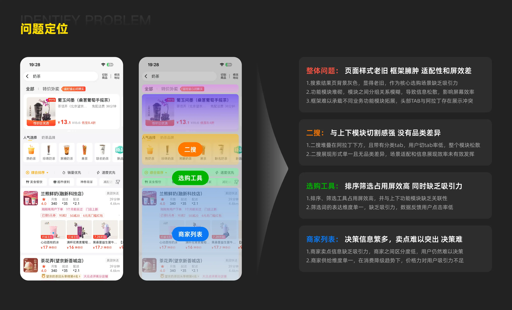
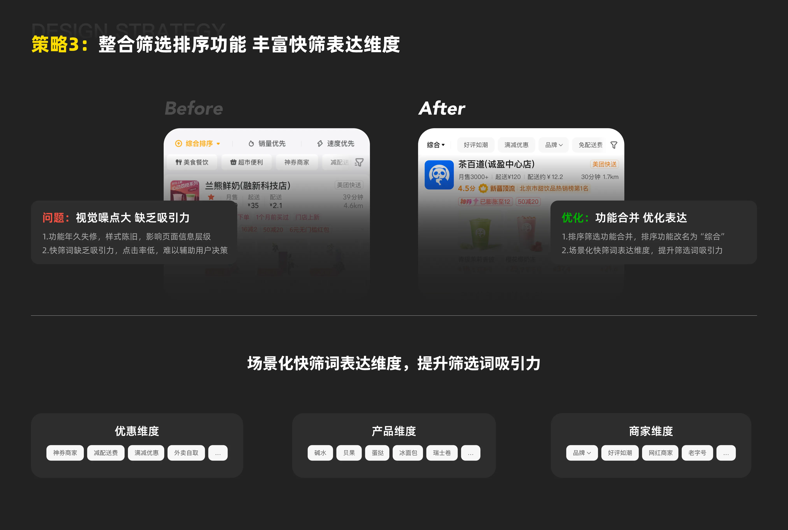
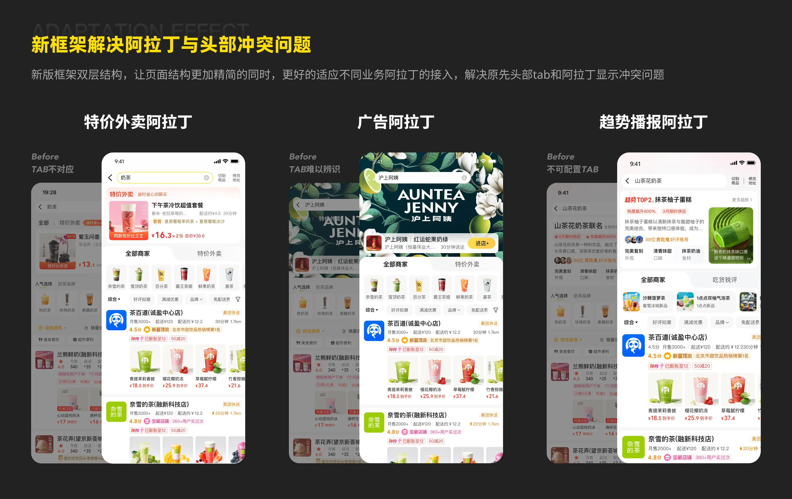
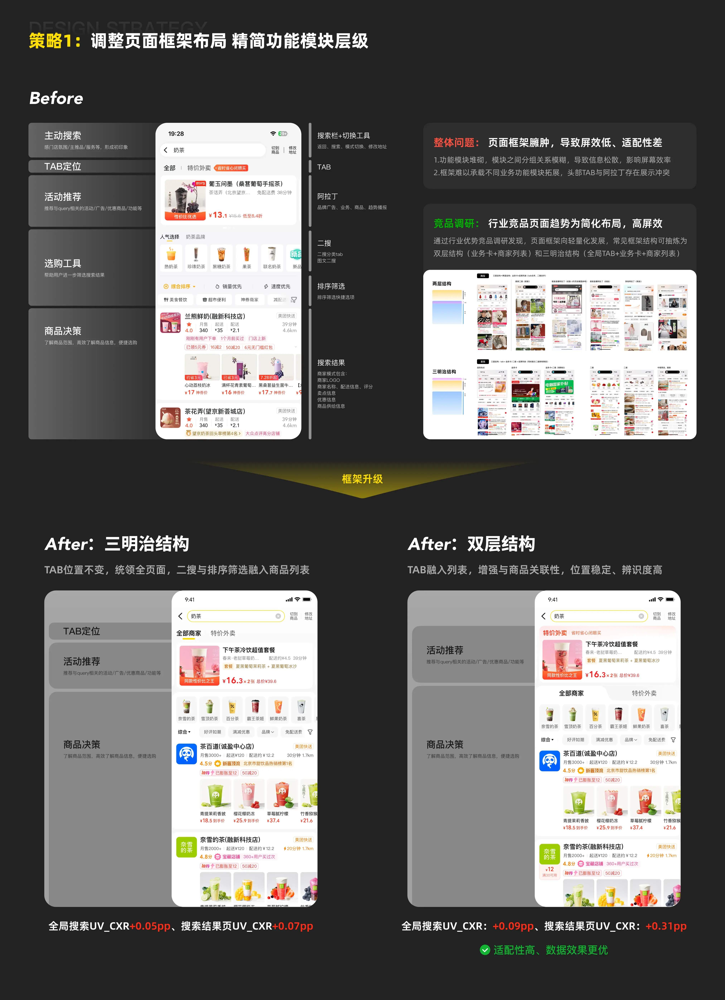
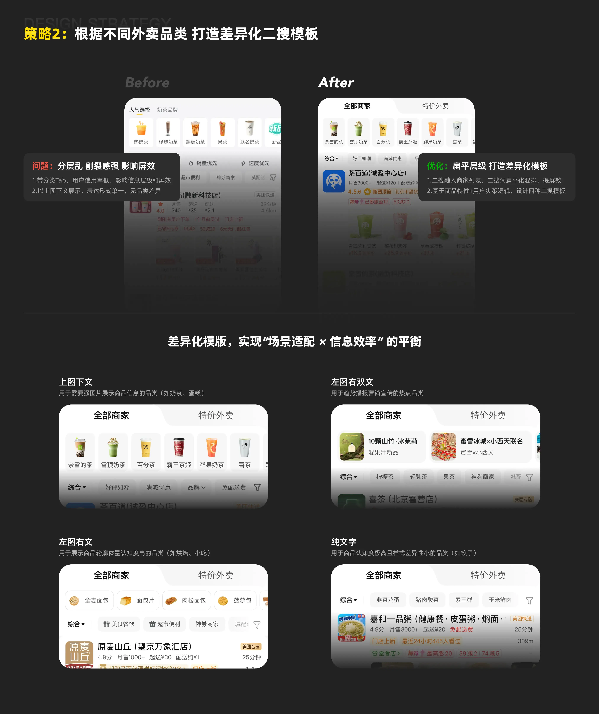
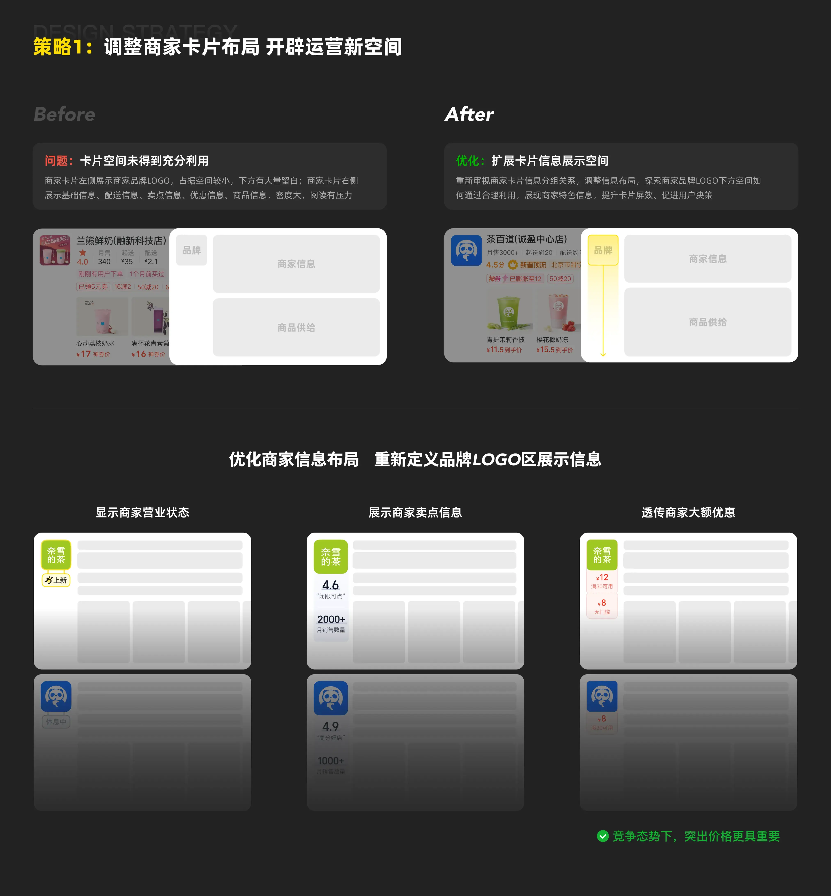
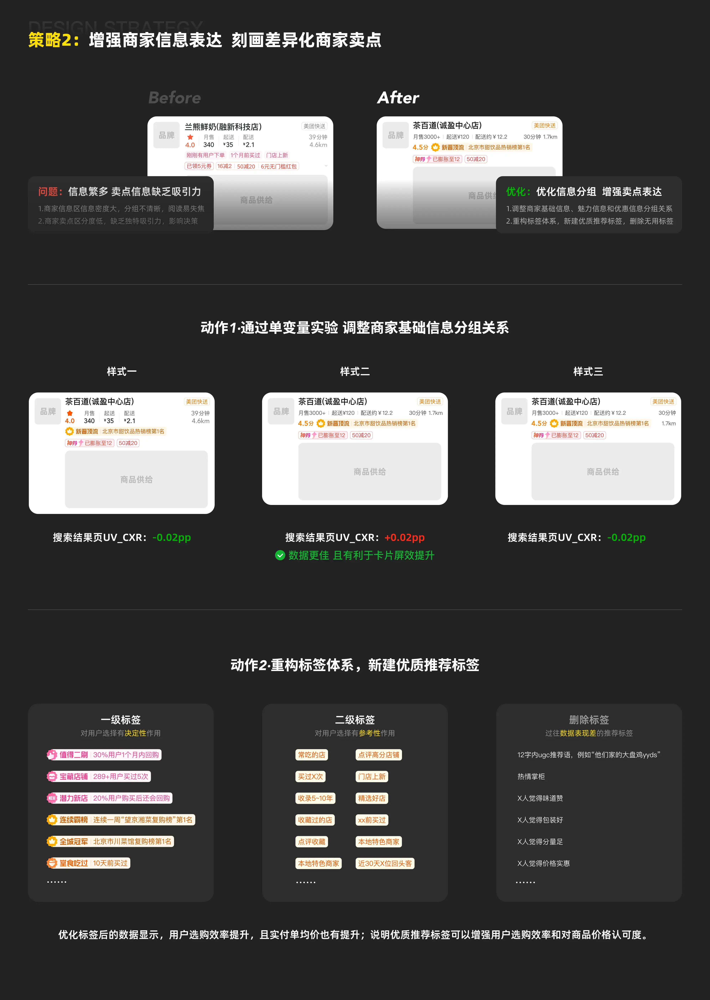
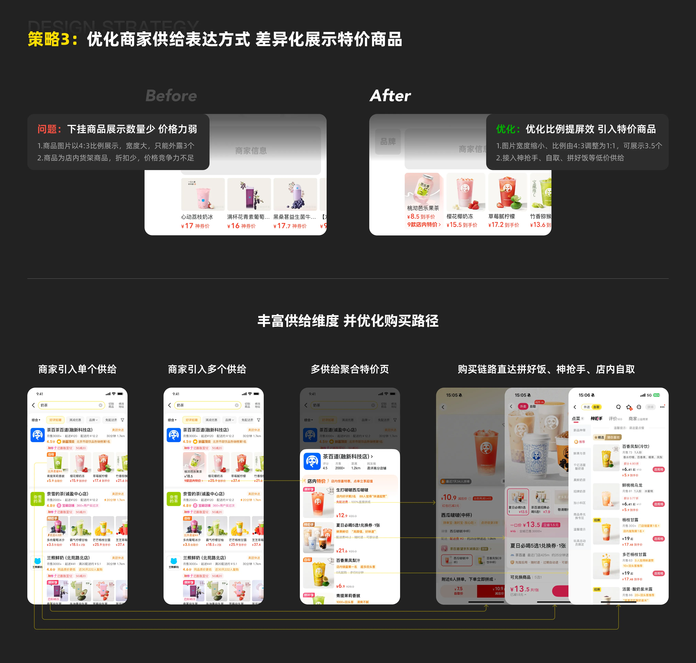

每一次改版，
都在上一次的认知上深化
这三次改版不是三个独立项目，而是一条连贯的认知递进线。每一次解决的问题，都会暴露出更深层的问题——而下一层，恰好需要更系统的方法去应对。
以下展开第三次改版的完整过程。
四个结构性问题，
让页面走到了改版的临界点
改版前我们结合各模块线上数据 + 专家走查，梳理出的不是孤立的体验问题，而是相互咬合的结构矛盾——框架撑不住业务扩张，工具留不住用户决策，商家卡片拉不开差异化。

整体问题 / 二搜 / 选购工具 / 商家列表——四层问题形成闭环，单点修补无效
理想搜索结果页，
需要同时满足三个条件
效率、兼容性、可扩展性——这三个维度不是口号，是在改版过程中每一个取舍时都会回头对照的标准。
效率
呈现用户需要的所有内容，做到详略得当。核心决策信息突出，噪音信息降噪，不让用户多想一步。
兼容性
多类供给可兼容且合理分布，多种动线可丝滑转换。新框架要能同时承载餐饮、奶茶、超市等不同场景。
可扩展性
未来增加新模块，可在当前框架中无痛扩展。不能改完又形成新的技术债，这是对未来自己的承诺。
最难的决策：
用数据否定了「显而易见」的方案
框架是一切的地基。我们提出了两套方案——三明治结构和双层结构，分别跑了 A/B 实验。
调整页面框架布局，精简功能模块层级
按亲密性原则合并同类模块，简化信息层级，确保页面呈现的节奏感与连贯性。

方案 A：三明治结构
TAB置顶，阿拉丁在二搜上方，与商品列表分离。直觉上更「清晰」。
方案 B：双层结构
TAB融入列表，二搜融合商家列表，层级更扁平。看起来「更密」，但用户反而更顺畅。
反直觉的结论：视觉上「更整洁」的三明治结构数据反而更差。双层结构减少了用户在 TAB 和内容区之间的视线跳跃，扁平的层级反而提升了连贯性。数据驱动设计决策，而不是美学驱动。
新框架同步解决阿拉丁与头部的冲突问题
旧框架下，广告阿拉丁、特价阿拉丁、趋势播报等多类阿拉丁与头部 TAB 存在严重的展示冲突，新框架在结构上根治了这个问题。

特价外卖阿拉丁 / 广告阿拉丁 / 趋势播报阿拉丁——三种形态在新框架下均可无痛承载
根据外卖品类，打造差异化二搜模板
二搜不再是千篇一律的图标横排。基于「商品特性 × 用户决策逻辑」，设计了四种差异化模板：上图下文、左图右双文、左图右文、纯文字——让奶茶、烘焙、粥这些品类各自找到最合适的信息表达方式。

场景适配 × 信息效率的平衡——二搜从「分割感强的障碍」变成「融入列表的导购工具」
整合筛选排序功能，丰富快筛表达维度
原来的排序筛选功能年久失修，视觉噪点大、用户点击率极低。这次把排序筛选合并为一行，同时从「优惠维度/产品维度/商家维度」三个场景化角度重新建设快筛词，大幅提升筛选词吸引力。

商家卡片：从「信息堆砌」
到「差异化说服」
框架定好了，接下来是最直接影响转化的商家卡片。三个策略同步推进，让每一张卡片都更有说服力。
调整商家卡片布局，开辟运营新空间
旧卡片右侧有大量空白。重新定义品牌 LOGO 区的展示逻辑，将用户账户中「大额低门槛可用券」透出在搜索结果页——结合比价策略，增强用户对优惠力度的感知，直接刺激点击进店。

设计洞察：卡片右侧不是「空白」，是未被激活的运营空间。在存量竞争激烈的外卖市场，让用户在搜索结果页就能看到「自己账户里有多少券可用」，是最直接的决策加速器。
增强商家信息表达，刻画差异化卖点
推荐理由分层分级重建：从「平台背书」「商家表现」「用户个性化」三个维度建设一级标签，参考历史点击数据筛选二级标签，删除表现差的噪音标签。同时通过单变量实验选出信息分组表现最优的卡片布局。

关键发现：标签优化后，用户选购效率提升，且实付客单价也有提升——说明优质推荐标签能同时增强用户对商品价格认可度，不是简单的吸引眼球。
优化商家供给表达，差异化展示特价商品
平台的价格优势（神抢手、拼好饭、自取）被展示逻辑割裂所掩盖。这次接入多类特价供给，从「单个供给」到「多个供给」到「聚合特价类目」，同步建设特价供给承接页，优化购买路径。

三次改版教会我的事
数字会自己说话——三次改版，每次都拿到了正向验证。但比数字更重要的是背后认知的升级：从“做好单点”到“建方法论”到“做系统性决策”。
从“做好体验”到“理解业务”
2021年我关注的是全链路体验细节——搜索框位置、引导页榜单、sug高亮。到2023年，我开始理解不同品类的决策逻辑差异：奶茶用户找品牌、蛋糕用户看颜值、火锅用户比套餐。到2025年，关注点变成了框架能不能撑住业务扩张。每次改版，对业务的理解都深了一层。
用研手段跟着问题走
2021年用眼动测试（6人追踪+深访）+满意度前后测（千余份问卷）验证结构方案，证明上下结构更优。2023年转向品类决策模型调研，建立四维判断框架。2025年用A/B实验推翻直觉——三明治框架更“整洁”但数据更差。方法没有高低，只有适不适合当前的问题。
系统性改造，不是堆砌功能
第三次改版6个策略同时推进，每一个都在对方的基础上生效——框架扁平了，二搜才能融入；卡片右侧空出来了，运营信息才能透出。这种相互咬合的设计，是前两次改版积累的认知才能做到的——知道每个模块如何影响其他模块。
可扩展性是给未来自己的礼物
新框架上线后，后续新增的特价外卖TAB、趋势播报阿拉丁等模块，都可以无痛接入。2021年改版时没考虑扩展性，导致2023年品类模板只能硬塞；2023年的教训让2025年把可扩展性写进了设计北极星——避免了下一次改版又从技术债开始。